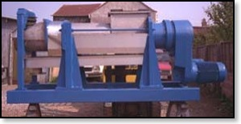

Stock Preparation Machines
(used and reconditioned)
CONTAMINEX
1x Voith “pump” Contaminex Size : 20/21
1x Voith “pump” Contaminex Size : 10/11 SOLD!
TURBO SEPARATOR
2x Voith Turbo Separator : Size ATS 10/11
1x Voith Turbo Separator : Size ATS 20/21
2x Voith Turbo Separator : Size ATS 30/31
1x Voith Pulper Reject Trommel with 10 mm perforation
1x Voith “O” SDM Refiner---500mm Disked
PURIFIER
3x Voith Purifiers Size : S3 –-1200 Ltrs Min at 4%
2x Voith Purifiers Size : S4 --1750 Ltrs Min at 4%
DEFLAKERS
1x Voith 1 E Deflaker
2x Voith 2E Deflaker
REJECT SORTERS
1x RS 2B Reject Sorter with 3mm perforation
PRESSURE SCREENS
Ref. No. 003--996114
2x Ahlstrom Pressure Screens SOLD!
Model Type:------------------------- M40-CTX
Year of construction:--------------- 1994 — to be confirmed
Operating Consistency:-------------- 0.5 to 1.2 %
Daily Production on 100% wastpaper:- 300T/D
Material:--------------------------- all St.St
Inner & outer Basket perforation:--- 1.6 mm
Rotor:------------------------------ 8x outer & two inner Vanes
55KW Motor:------------------------- included
Condition:-------------------------- as new
Location:--------------------------- Germany
DE-WATERING MACHINERY
1X KUFFERATH Akkupress B 375 fully Refurbished by Kufferath
1x Fan Separator ( Sludge / Vibscxreen Reject etc.
NEW Croft Pulper Reject Compactors Size : C350 & C450 (Price starting from Euros 38.000.00)
NEW Croft Reject Trommel with Negative OR Positive angles. (Price starting from Euros 26.700.00
NEW CROFT MACHINERY
CROFT COMPACTOR / DE-WATERING PRESSES FOR PAPER MILL REJECT:

Croft screw compactors
are available in three sizes, and are designed to give an
output dryness of Approx. 60 -70%. depending on the
material and input rate.
These compactors are built with our patented "Non -
Jamming" screws, designed to prevent blocking of the screw.
CROFT REJECT
TROMMELS:
We manufacture a
Modular framed Reject Trommel for any Paper Mill Reject. We
can offer both a positive or a negative angle. Our Trommels
also feature Tumbler bars rather than a screw which results
in more efficient washing and reduced fibre loss.
CROFT "NON BLOCKING"
DIRT TRAPS:
The "Maag Non - Blocking" dirt trap has a unique design
which prevents the lower valve (door) from blocking during
its cycle. (Suitable for Pulpers, Cleaners and any dirt
removal applications).
CROFT SAND
SEPARATORS
The Croft Sand Separator allows for the removal of sand and
heavy deposits from any backwater system. The machine is a
non pressurised machine, which removes the sand via a screw
feed.